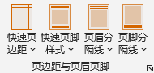

页边距与页眉页脚功能
Word Ribbon菜单格式助手中如下图所示部分用于页边距与页眉页脚的设置：
快速页边距 一次性将当前文档页面上下左右四方边距设置为默认值或2.0cm、2.5cm、3.0cm以及3.5cm；页边距默认值可以通过加载项设置进行更改。
快速页眉页脚 按预定义的8种页脚样式设置当前节的页脚；页脚的字体、字高均采用当前页脚设置，分隔线线型、线宽以及页脚文字与分隔线的间距采用加载项设置中定义的数值。
页眉分隔线、页脚分隔线 在当前节的页眉、页脚插入或删除分隔线；当再次为同一页眉或页脚插入不同的分隔线时，将替换之前的分隔线；本程序插入的分隔线为页眉、页脚的边框，非边框类型（如直线形状）不能通过本程序删除。使用该功能会断开当前节与前后节页眉页脚的链接，避免影响其他节的设置。
单击Ribbon菜单页边距与页眉页脚右下角小箭头 ，可调出设置界面进行更多设置，界面如下：
，可调出设置界面进行更多设置，界面如下：
页边距设置 可以按方位及方位组合更灵活的设置页边距值，或增加装订线位置设置；当取消应用于本节设置时，将为全文设置统一的页边距。
页眉页脚设置 本功能区可以为文档添加页眉页脚。程序界面所显示的页眉、页脚高度数值为当前所在节的页眉页脚高度，当统一高度未选中的情况下，程序不会调整页眉页脚高度，否则将按设定值调整；字体相关设置在程序启动时将读取当前文档页眉页脚样式的字体信息，即使更改，在未应用设置前不会更改文档页眉页脚样式。
当勾选首页不同、奇偶页不同选项时，页眉页脚类型将扩展区分首页或者奇偶页，需分别选择对应类型后输入页眉页脚内容。需要说明的是，首页仅指应用范围的第一页（即：应用于本节，则本节的第一页为首页；应用于全文，则全文第一节的第一页为首页；应用于本节之后，则开始应用设置的起始节的第一页为首页）。另外，奇数页与未区分奇偶时的页眉页脚内容是相同的。
页眉页脚分隔线不区分奇偶页，且当区分首页时，程序不会为首页页眉页脚插入分隔线。
当勾选内容为空时清除既有页眉页脚选项时，如果页眉或者页脚的文本内容为空时应用设置，将删除既有页眉或者页脚的内容。例如，既有文档页眉页脚已存在内容，当本界面中仅设置页脚内容，如不勾选此选项，则仅更改页脚，不影响页眉，否则将删除页眉。
页码、总页数以及Logo设置 本程序支持页码、总页数和Logo的设置。页码符号为#，可以设置起始页码数；总页数符号位$（应用于全文或者当前节之后时，为全文页数；应用于本节时，为本节页数），Logo文件最多支持3个不同的Logo，符号为[LOGO1]、[LOGO2]、[LOGO3]，插入时替换为设置的图片，Logo图案的大小设置为图案高度与字体高度的比例高度，图案宽度等比例缩放。在页眉、页脚内容设置的下拉选项中有预设的内容可供快速输入。
注意：
1. 页眉页脚区域内的设置，在Word程序运行过程中，会暂时缓存于内存中，当Word关闭后再次打开，其内设置将重置。
2. 请注意页眉页脚内容长度，特别是左中右三个位置均设置内容时，过长的内容将会换行，影响美观；当页眉、页脚左中右三个位置仅一个位置的设置内容时，内容长度可以达到页面整行的宽度。
3. 当文档分节较多（比如大于50节），每节页面纸张尺寸、方向存在变化频繁时，插入页眉页脚可能耗费一定的时间，请耐心等待设置完成的提示。当程序判断页眉页脚尺寸发生变化时，将断开页眉页脚节之间的链接，避免修改时相互影响。